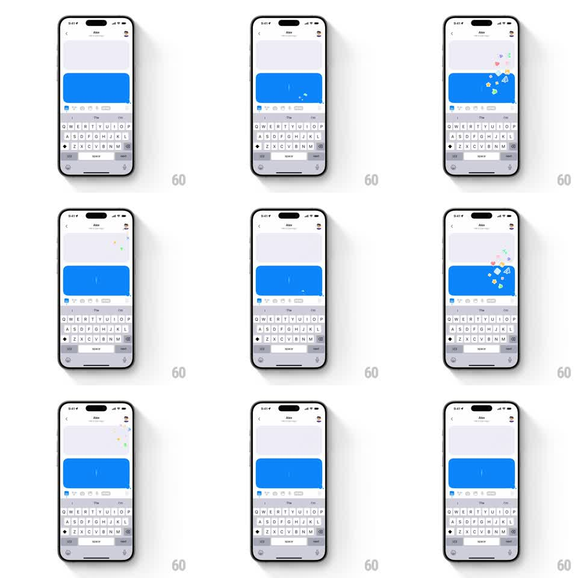

Media
Frame-by-frame

Rebuild this interaction 1:1: Honk's sticker burst - tapping the honk button fires a synchronized burst of floating emoji stickers that explodes from the sent blue message bubble and from the recipient's avatar, drifting up and fading out.

Rebuild this interaction 1:1: Honk's sticker burst - tapping the honk button fires a synchronized burst of floating emoji stickers that explodes from the sent blue message bubble and from the recipient's avatar, drifting up and fading out.
## Integration
Integration: stack-agnostic spec - springs given as stiffness/damping, timed motions as duration + curve; map every value to your framework and animation library of choice.
## Scene
Honk 1:1 chat ("Alex") with the keyboard open. A blue message bubble sits mid-screen; the recipient's avatar is at the top. On tap, a confetti of emoji stickers (flowers, diamonds, party faces, sparkles) erupts from two origins at once: the bubble's top-right corner and the avatar.
## Motion spec
Pattern: dual-origin emoji burst with gravity drift.
- On tap: the blue bubble pulses (scale 1 -> 1.06 -> 1, spring ~340/16, 200ms).
- 12-16 emoji stickers spawn simultaneously at both origins (6-8 each), each with random initial velocity up and outward (angle spread ~120deg, speed 200-420pt/s), random scale (0.5-1.1) and rotation (+-180deg).
- Stickers decelerate under light gravity, drift upward (float), spin slowly (+-90deg/s), and fade out over 900-1400ms (staggered per sticker).
- The avatar pops in sync (scale 1 -> 1.15 -> 1, 200ms) when its burst fires.
- Rapid re-taps stack new bursts on top of fading ones without clearing them.
## Calibration
- The two bursts fire on the same frame - synchronization is the point.
- Stickers never fall below their origin; they are buoyant, not ballistic debris.
## Reduced motion
A single ring of 6 stickers fades in/out around the bubble (400ms), no travel.
## Don't miss
- The keyboard stays up the whole time; the burst plays above it.
- Each sticker is a real emoji glyph, slightly tilted - no confetti squares.